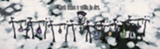

Only uncooked meats can be dried into Jerky. Jerky, Small Jerky, and Monster Jerky can all be created using a Drying Rack, each of which spoils much more slowly than either their fresh or fire-cooked counterparts. Dried foods also provide a greater health bonus when eaten. For example, a Small Jerky provides 8 Health, while a Cooked Morsel provides only 1 health; largeJerky provides 20 health, while Cooked Meat provides only 3 health. Monster Jerky still drains health and sanity, but to a lesser degree.
How all the meats look on the drying rack.
Unlike cooking meat, the jerky created will always be completely fresh, instead of having half less spoilage than the meat used. This means a spoiled morsel can be dried to get a completely fresh piece of Jerky. Meat left on the racks do not spoil until collected.
Note that while meat always becomes jerky, and monster meat always becomes monster jerky, small jerky may be made by drying any of the following:
Morsel
Frog Legs
Drumstick
Batilisk Wing
Fish
Eel
Morsel, Frog Legs, Fish and Drumstick take only one day to dry, whereas Batilisk Wing and Meat take two days.
Reign of Giants
In the Reign of GiantsDLC, Jerky left on the Drying Rack will now be affected by spoilage.
Tips
Drying Racks are very useful for storing meats. Jerky and Small Jerky take 20 days to completely spoil, while Meat and Morsel will spoil in 6 days, and cooked Meat/Morsel will spoil in 10 days. Storing any kind of jerky in the Ice Box will give 40 days before they spoil, allowing the player to focus on concerns other than gathering fresh food.
It is a good idea to try and build at least one drying rack fairly early on (i.e. before the first winter). This then allows you to store meat on the drying rack ready for the winter, and will easily last throughout winter once picked, allowing you to have an emergency food source should you fail to find any one day. Additionally, the jerky versions provide improved stats over regular and cooked meats (in particular, sanity).
Drying a Fish, Frog Legs, or Drumstick will turn them into Small Jerky, which prevents it from being used as a specific ingredient for certain Crock Pot meals, such as Fish Sticks (which need fish) or Froggle Bunwich (which need frog legs).
Raining slows down the drying process, which makes it hard to make jerky in spring.
All the meat listed above can still be dried during winter, this is a very good advantage for healing/sanity restoring when you need it the most and don't have much healing items on your hands.
")
.png.html "Screen shot 2013-07-23 at 4.41.28 AM (2).png (2.02 MB)")
{kind=link}
{kind=link}